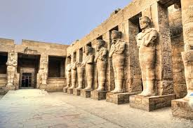
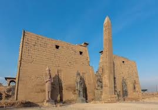
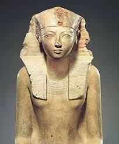

الأقصر
الأقصر تُعرف بأنها أكبر متحف مفتوح في العالم، حيث تضم آثارًا فرعونية لا مثيل لها على ضفاف النيل.
معبد الكرنك
بدأ بناء المعبد منذ الدولة الوسطى واستمر عبر العصور حتى العصر البطلمي. يضم أعمدة ضخمة وقاعات مهيبة، ويُعتبر من أعظم الإنجازات المعمارية في مصر القديمة.
وادي الملوك

مقابر ملكية منحوتة في الجبال، تضم ملوك عظام مثل توت عنخ آمون ورمسيس الثاني. زيارة الوادي رحلة إلى أعماق التاريخ الفرعوني.
معبد الأقصر
شُيّد في عهد أمنحتب الثالث ورمسيس الثاني، ويُعتبر رمزًا للعبادة الملكية والاحتفالات الدينية الكبرى.
معبد حتشبسوت
معبد جنائزي فريد بُني للملكة حتشبسوت، يتميز بتصميمه المدرج على سفح جبل الدير البحري.